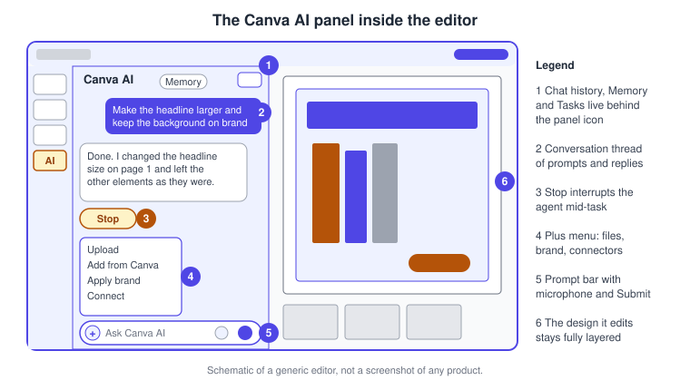
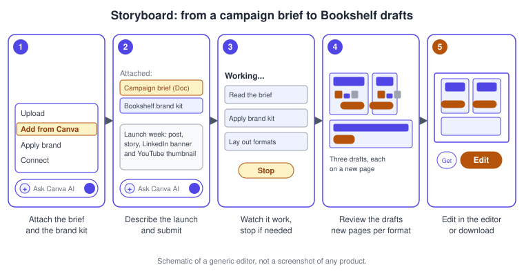
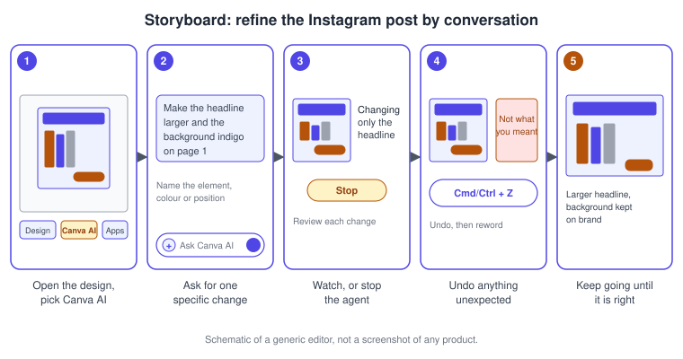
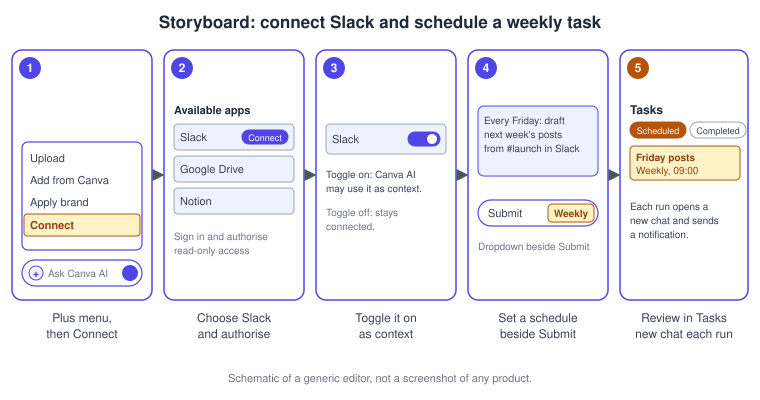
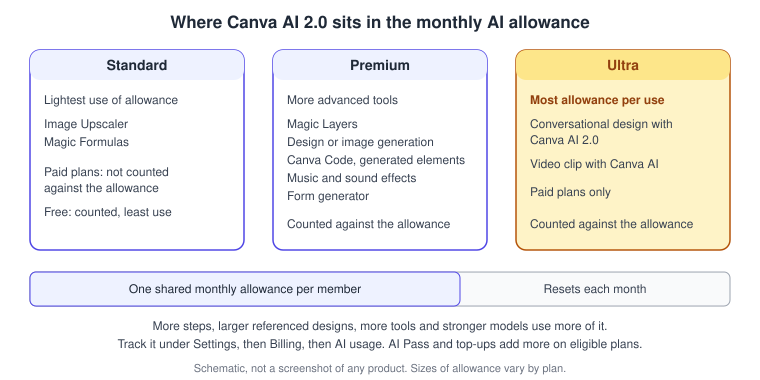

Canva AI Assistant
|
This content was generated with the assistance of AI and should be verified against the official documentation before being relied on in production. |
This page was checked against the official Canva Help Center, the Canva newsroom and the pricing page on 2026-11-07. It covers Canva AI, the assistant that sits in the Canva homepage and in the editor side panel of the web app, the desktop app and the mobile apps, and that Canva calls Canva AI 2.0 in its current form. Canva AI 2.0 was announced at Canva Create on 2026-04-16 and "available today as a research preview". The Help Center now documents it without a preview label, but Canva has not published a general-availability date, and several articles still say that individual capabilities are not yet available to everyone. Treat it as a feature that is rolling out: what you see depends on your account, plan, language and region.
Plans. The Help Center lists Canva AI 2.0 features, including Memory Library and Connectors, with Canva Pro, Canva Teams (the legacy plan that Canva Business replaced for new sign-ups on 2025-10-30), Canva Business and Canva Nonprofit. The AI-usage article also lists Canva Enterprise for the Premium and Ultra tiers. Canva Free and Canva Education include some AI features, such as Magic Write and Background Remover, with limited monthly usage, and Free accounts can use Canva AI Connectors as they become available to their account. Memory Library needs a paid plan. When a task needs a paid feature, Canva AI tells a Free user so instead of failing silently. Prices are not repeated here; they are published at https://www.canva.com/pricing/.
AI tier. Conversational design with Canva AI 2.0 is an Ultra AI tool, the tier that draws the most from the shared monthly AI allowance. Generating a design or an image with Canva AI, Magic Layers and Canva Code are Premium. See Plans, Pricing and AI Allowance for the tiers and "Use of the AI allowance" below for how the assistant consumes them.
The running example is Bookshelf, the book catalogue and reading-list app designed in the Figma sub-section. Here Canva AI turns a campaign brief into launch drafts, refines one post by conversation, and runs a weekly drafting task.
What Canva AI is and why it exists
Canva describes the earlier generation of Canva AI as "focused on generating results from a single prompt". Canva AI 2.0 instead lets you create and edit by chatting with the assistant in the editor. Canva’s launch announcement describes four capabilities.
| Capability | What it means in practice |
|---|---|
Conversational design |
Start from an idea, a goal, a brief or a rough structure and keep talking; the assistant keeps the context of the conversation while you iterate. |
Agentic orchestration |
The assistant chooses and combines Canva’s tools to reach the outcome you describe, instead of running one tool per prompt. |
Layered object intelligence |
Output is built from individual editable objects, not a flat image, so asking for a change alters only the targeted element. |
Memory Library |
A personal profile of your style, colours and tone that the assistant uses to tailor results. |
Canva states that these run on the Canva Design Model, a foundation model it built to understand the structure and hierarchy of real designs. It also names six workflows built on top: Connectors, Scheduling, Web Research, Brand Intelligence, Sheets AI and Canva Code 2.0. The rest of this page follows that list, using the Help Center articles for the exact steps.
Where it lives
On the web, look for Canva AI in the homepage side navigation; if it is not listed, open More and look for it there. On mobile it is in the bottom navigation, or under More. In an open design, Canva AI is in the editor side panel; if you cannot see it, open Apps (or More when the editor shows it) and search for Canva AI, or start from the homepage instead. Connecting third-party apps from the editor works in the web browser and the desktop app, not in the mobile app.
The panel is a chat. The prompt bar has a plus menu with four entries (Upload, Add from Canva, Apply brand and Connect), a microphone icon for speaking a prompt, and a submit button. While the assistant is working, a Stop button interrupts it. A panel icon at the top corner opens the chat history, Memory and Tasks.

-
The panel icon opens chat history, the Memory Library and Tasks.
-
The thread keeps your prompts and the assistant’s replies together.
-
Stop interrupts the assistant while it is processing, after which you can type a new prompt or edit manually.
-
The plus menu attaches files, existing Canva designs, a Brand Kit, or a connected app.
-
The prompt bar takes typed or spoken prompts; press Enter or select Submit.
-
The design stays fully layered, so you can switch to manual editing at any moment.
If Canva AI does not appear anywhere, the Help Center lists the likely causes: it may not be available in your selected Canva language or country, a school administrator may not have enabled it for Education accounts, or a team or Enterprise administrator may restrict AI access. Switching the Canva language to a supported one, such as English, and reloading the homepage is the first thing to try. Supported languages listed in the starter guide include English, Spanish, Portuguese, French, German, Italian, Dutch, Polish, Turkish, Arabic, Japanese, Korean, Chinese (Simplified and Traditional), Indonesian, Thai, Vietnamese and Hindi, and some features support fewer.
Agentic work in one loop
A prompt is not a single generation. The assistant reads the request and anything attached, selects tools, acts on the design, and then waits for you; each reply is the start of the next turn, so a refined brief produces a refined design rather than a new one.
The Help Center adds a practical consequence: the assistant interprets your prompt and makes design decisions on its own, so open-ended prompts such as "make it better" can change more than you expected.
Procedure 1: turn the campaign brief into launch drafts
This procedure starts on the homepage and ends with drafts of the Bookshelf launch assets. The Help Center lists presentations, posters, cards, flyers, invitations, business cards, postcards, documents and social media designs (Instagram posts and stories, Facebook posts and covers, Pinterest pins, YouTube thumbnails and banners, X posts) as supported, and videos at 1920 x 1080, 1080 x 1920 or 1080 x 1080 pixels.
-
Open the homepage and select Canva AI in the side navigation. On mobile, use the bottom navigation or More.
-
Select the plus icon. Choose Add from Canva and pick the Bookshelf campaign brief Doc; choose Apply brand and pick the Bookshelf Brand Kit.
-
Type the request, for example: "Create the Bookshelf launch week set: an Instagram post, an Instagram story, a LinkedIn banner and a YouTube thumbnail for the 'Book of the week' campaign, following the attached brief." Optionally select a design type for a more specific prompt, or the microphone to speak it.
-
Press Enter or select Submit. Watch the assistant work; select Stop if it goes in the wrong direction.
-
Depending on the design type, Canva opens the editor straight away, or you select the generated design and choose Edit. You can also download it or send another prompt for a different result.
-
Continue the conversation in the side panel of the editor to refine the drafts.

Attached files give the assistant context. Upload adds files from your device, Add from Canva adds your own designs, Import adds files from connected cloud apps, and Sources pulls in web information. Be specific, break complex requests into smaller steps, and keep the conversation going to refine results; the Help Center lists these as its main tips for better results.
On-brand output
With Brand Intelligence, generated designs start from your brand rather than from generic styles. The Help Center describes two routes: add Brand Templates to a Brand Kit so they appear contextually in Canva AI, or extract brand context from a URL such as a company website when you have not yet set up a Brand Kit. If the website matches a Brand Kit you already have, the article tells you to use the Brand Kit, which gives the most consistent result. Brand designers and admins add Brand Templates to Brand Kits; team members view and use them. Canva AI supports fixed-size document types such as presentations and social media designs; website designs, Sheets, videos and Code are not supported by this route, and Docs need a workaround (open the Docs Brand Template in the editor and use Canva AI to edit after applying it). Building the kit itself is covered in the brand pages of this sub-section.
Procedure 2: refine the Instagram post by conversation
Conversational editing works on a design that is already open, and the Help Center notes that it is not yet available to everyone. It handles improvements to the whole design, style variations each on a new page, resizing or flipping, adding pages from an attached document, bulk edits across all pages (for example converting every image to black and white), theme changes, Gantt charts and charts built from an uploaded CSV file or a connected data source. The Help Center suggests starting with simpler designs, because multi-layered designs may give lower-quality results.
-
Open the "Book of the week" Instagram post in the editor.
-
Select the Canva AI tab in the side panel (on mobile, open More on the homepage, then Canva AI).
-
In the prompt bar, type a specific request, for example "Make the headline on page 1 larger and change the background to the indigo of the brand kit".
-
Select Submit and wait while the assistant analyses the design and starts making changes. Select Stop if you need to interrupt it.
-
Review the result. If it changed something you did not intend, undo with Cmd + Z on macOS or Ctrl + Z on Windows (on mobile, tap Undo), then reword the prompt with the colour, size or position you want.
-
Continue the conversation until the post is right, then edit manually where you prefer.

If the assistant seems stuck, complex designs and long conversations can take longer. Select Stop and send a simpler prompt; if Stop does not respond, refresh the page (on mobile, close and reopen the design).
Memory Library and the About Me page
Memory Library builds a personal profile of your style, colours and tone so that results are tailored to you. According to the Help Center it learns in two ways: from your most relevant recent designs and documents, and from your Canva AI conversations over time. It is available with Canva Pro, Teams, Business and Nonprofit.
The profile is surfaced as an About Me page, which is an ordinary Canva Doc that Memory Library creates and updates. You can review and edit it at any time, and the article warns that Memory Library can make mistakes, so check that the details match your real preferences. To open it, go to Canva AI from the homepage and select Memory; if you have not created one yet, choose Create About Me. To remove it, move the doc to the trash from File, then Organize, or from the homepage; to stop using it, open your account menu, then Your account, then AI personalization, and turn off the About Me toggle under Memory.
Two limits matter. First, each new Canva AI chat starts fresh: the assistant does not carry conversation details from one chat into the next, even with Memory Library enabled, so a preference that must always apply belongs on your About Me page. Second, the page stores only personal preferences such as style, colours and tone, not the content of your designs. Early memory can be thin if you have few relevant designs.
For Bookshelf, a useful About Me entry reads like a brief: "Warm editorial tone, indigo and amber palette, sentence-case headlines, no exclamation marks."
Connectors
Connectors link Canva AI to other tools so the assistant can use their content as context. The Help Center names productivity apps such as Notion, Asana and Google Drive, communication apps such as Slack, Gmail and Zoom, and business tools such as HubSpot and Gong, and sends you to the Apps Marketplace for the current list. Canva’s launch announcement also names Google Calendar, Microsoft, Atlassian and Linear. Connectors are available to Free and supported paid accounts, but availability varies by connector and account, and Canva rolls them out over time.
Every connection currently has read-only access: Canva AI can read what your connected account is allowed to see and cannot create, edit or delete anything in the other app. Disconnecting an app removes it everywhere in your account, whereas turning it off in the plus menu only stops the assistant from using it as context.
Connecting Canva to other assistants is a different feature
Do not confuse these connectors, which bring other tools into Canva AI, with the Canva AI Connector, which brings Canva into assistants such as ChatGPT, Claude, Gemini or Copilot. Designs generated through that route also use your AI allowance, as the AI-usage article states.
Scheduled tasks
Scheduling lets Canva AI create or update content on a repeating schedule. In the starter guide, you describe the task, open the dropdown next to the submit button and choose a schedule, or open the panel icon at the top corner, select Tasks and choose New Task to enter a name, a description and a date and time. Tasks can run daily, weekly or monthly, each run creates a new chat, you get a notification when a task completes, and you can schedule up to 10 tasks at a time. The Tasks view lists them under Scheduled and Completed. The Help Center adds that you may not see the feature if it is not yet available on your account.
Procedure 3: connect Slack and schedule a weekly drafting task
This procedure assumes your organisation allows the Slack connector. Slack is used as an example; the steps are the same for another supported app.
-
On the homepage, go to Canva AI. In the prompt bar, select the plus icon, then Connect. (Inside a design, open the Canva AI tab in the side panel and do the same.)
-
Choose Slack from the list. If you have not linked your account yet, select Connect and follow the prompts to authorise Canva to access your content.
-
Toggle the app on so that Canva AI uses it as context.
-
Type a prompt that names the app, for example "Using the #launch channel in Slack, draft next week’s Bookshelf Instagram posts in the Bookshelf brand kit". Naming the app and the information you want avoids the case where the assistant does not recognise a connected app as relevant.
-
Next to Submit, open the dropdown and choose a weekly schedule, or create the task from Tasks with a name, description and time.
-
Review runs under Tasks, in Scheduled and Completed, and open the chat each run creates.

If an app will not connect, the likely cause is signing in with the wrong account or an incomplete sign-in; disconnect, refresh the page and reconnect. Canva AI also only sees data that the connected account has permission to view.
Web research
Web research lets Canva AI search the web for the latest information on a topic, which feeds presentations, social posts, reports and print materials. Canva’s announcement says it can run on demand or scheduled in the background and delivers the result as structured, editable content in your design. As with any web-derived content, review claims before publishing; for Bookshelf, check every book detail and release date against the publisher.
Docs, presentations, Sheets and Canva Code
The same assistant is reachable inside other Visual Suite products: it can generate, refine and summarise Docs, structure presentations from a prompt or a template, generate Sheets, and write and edit interactive code in a design. Each of those has its own page: Docs, Presentations, Sheets and Canva Code. The Magic-named tools that predate Canva AI 2.0 are mapped on Magic Studio Tools, and image and video generation on AI Image and Video Generation.
Use of the AI allowance
All of Canva’s own AI tools share a single monthly allowance per member, and tools use different amounts of it. Conversational design with Canva AI 2.0 sits in the Ultra tier, and creating a video clip with Canva AI is also Ultra; both are paid-plan features. On paid plans, Standard tools do not draw from the allowance, while on Free they do. Because the assistant can take many actions autonomously, it uses more allowance than a single-prompt feature. The Help Center lists four factors that raise usage: the designs you reference (a 40-slide presentation uses more than a 5-slide one), the complexity of the task, how many tools it uses, and the models it needs. You see a banner in the panel when you reach your monthly limit, and the usage tracker is under Settings, then Billing, then AI usage. Beyond the included allowance, AI Pass and AI top-ups exist as add-ons on eligible subscriptions; the options depend on your subscription, so check the article.

The allowance covers Canva’s own AI tools only. Generations made through third-party AI apps in the Apps Marketplace are not counted against it, and their own subscriptions or limits apply.
Version history and chats
When AI features are used in a design, you may see version entries labelled Canva AI in Version History. The Help Center says they currently appear under a generic Canva AI label rather than the name of a specific AI tool. Together with undo, this is your safety net for conversational edits. In the comments panel, a filter named Canva AI shows chats with Canva AI. Version history itself is limited to paid plans; see Editor Tour for where it lives.
The chat history is reached through the panel icon at the top of Canva AI on the homepage. Deleting a chat is permanent: the Help Center states that deleted chats cannot be restored.
Prompting tips
-
Be specific about the element, its colour, size or position: "the large heading on page 1" works better than "make it better".
-
Break big requests into smaller steps; the agent processes small, focused steps faster.
-
Attach context: the brief, the brand kit, and the files or connected apps the answer should draw on.
-
Start with a simple layout before adding complexity, and use Stop early rather than late.
-
Use undo (Cmd or Ctrl + Z) when a result surprises you and then reword, instead of asking the assistant to reverse itself.
-
Put standing preferences on the About Me page rather than repeating them in each new chat.
Desktop and mobile differences
| Task | Web and desktop app | Mobile app |
|---|---|---|
Open Canva AI |
Side navigation on the homepage, or the Canva AI tab in the editor side panel |
Bottom navigation or More on the homepage; More in the editor when shown |
Connect third-party apps from the editor |
Supported |
Not available |
Speak a prompt |
Microphone icon in the prompt bar |
Microphone icon in the prompt bar |
Undo an unwanted change |
Cmd + Z (macOS) or Ctrl + Z (Windows) |
Tap Undo |
Interrupt the agent |
Stop button |
Stop button |
Prompts are submitted with Enter on a keyboard or with the arrow button on mobile.
Common pitfalls
-
Expecting memory across chats. Each new chat starts fresh. Use the About Me page for standing preferences.
-
Vague prompts. "Make it better" can restyle more than you intended; name the element and attribute.
-
Treating the tool as unmetered. Ultra-tier conversational design uses the most allowance; large referenced designs and long conversations cost more.
-
Forgetting the connector toggle. A connected app that is toggled off is still connected but is not used as context.
-
Assuming every connector is present. Connector lists vary by account and change over time.
-
Skipping review. Check facts from web research and from connected apps before publishing.
Recent changes and where older guides differ
| What changed | Detail | Date |
|---|---|---|
Canva AI 2.0 announced |
Conversational and agentic assistant built on the Canva Design Model, launched as a research preview |
2026-04-16 |
Help Center documentation |
"What’s new in Canva AI" and "Get started with Canva AI" describe the features without a preview label; no general-availability date is published |
Checked 2026-11-07 |
Canva Business replaces Teams |
For new sign-ups; existing Teams subscribers keep their plan without Business-only features |
2025-10-30 |
The two requester-provided books predate these changes. Canva for Beginners (Yellow Pen, 2024) describes a "Notes & AI assistant" in the editor, and Canva For Dummies (Stay, 2025) presents Magic Studio as the umbrella for Canva’s AI, with Magic Write for text. Today, Canva AI is a conversational, agentic assistant with memory, connectors and scheduling, and the Magic tool names survive as individual tools. The Dummies book also suggests using an external chatbot to write social copy; Magic Write and Canva AI do this inside Canva, and the Canva AI Connector now brings Canva into those chatbots. Neither book covers the Memory Library, Connectors, Scheduling, Web Research or the Canva Design Model. On any difference, follow the official Help Center.